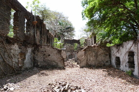
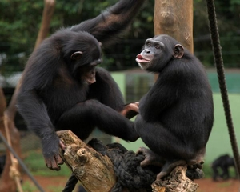

Rich History
With a rich history leading back to precolonial era, Sierra leone served as a main
point for slaves in places like Banana Island and Bunce Island. The beautiful
coast line of the country was also an attractive spot for the slavers to enjoy
peace and tranquility. Sierra Leone does not just keep a history of itself
but also of Africa.
Visiting this beatiful country connects us with nature and its natural beauty.

Beautiful Land Scape
The mountains are phenomenal and as with the name of the country, an aerial view of the mountains
actually look like a lieing Lion which gives it the name Lion Mountains. There are over 100
mountain ranges in Sierra Leone with over 100 waterfalls. If natural beauty is really your interest,
then Sierra Leone or as it is commonly called salon is a place to visit

Incredible Wild Life
There are many wild life conservations and national parks all over the country like tacugama
chimpazee pack and many others. At the mambo pack are animals likee zebras, lions and elephants
which are all a beauty to see and a moment to see what the jungle looks like and how these
beautiful creatures survive in the wild is such a catching site.